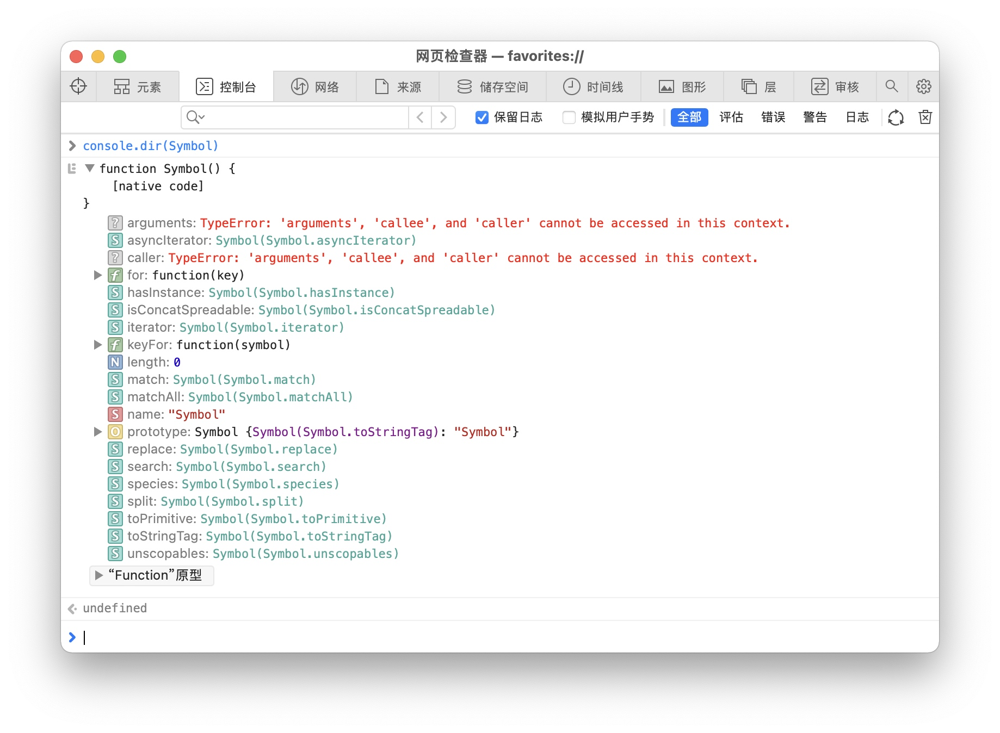

红宝书
base 🤯
严格模式
预处理指令 置于开头
"use strict"
变量
声明
- var --- 变量提升（hoist）
- let/const --- 无提升（暂时性时区）
- 使用let在全局作用域中声明的变量不会成为window对象的属性（varb声明的变量则会）
- var声明作用域无
块级作用域，let/const则有。
for (var i = 0; i < 5; ++i) {
// 循环
}
console.log(i) // 5
for (let i = 0; i < 5; ++i) {
// 循环
}
console.log(i) // ReferenceError: Can't find variable: i
原始数据类型
typeof操作符判断数据类型，返回对应类型的字符串
typeof(null) // "object"
Underfined类型
underfined
let message
// let age
console.log(typeof message) // "underfined"
console.log(typeof age) // "underfined"
console.log(message) // underfined
console.log(age) // ReferenceError: Can't find variable: age
Null类型
null，逻辑上，null值表示一个空对象指针。
console.log(null == underfined) // true
console.log(null === underfined) // false
Boolean类型
true/false
console.log(Boolean(null)) // false
console.log(Boolean({})) // true
| 数据类型 | =true | =false |
|---|---|---|
| Boolean | true | false |
| String | 非空字符串 | ""（空字符串） |
| Number | 非零数值（包括无穷值） | 0、NaN |
| Object | 任意对象 | null |
| Undefined | -（不存在） | underfined |
Number类型
使用IEEE 754格式表示整数和浮点数（也称双精度值）
NaN
【Not a Number】
console.log(0/0) // NaN
console.log(5/0) // Infinity
console.log(5/-0) // -Infinity
console.log(NaN === NaN) // false
console.log(isNaN(NaN)) // true
数值转换
- Number()
- parseInt() --- 多用于进制转换
- parseFloat()
console.log(Number(true)) // 1
console.log(Number(false)) // 0
console.log(Number(null)) // 0
console.log(Number(undefined)) // NaN
console.log(Number('')) // 0
String类型
不可变性
【immutable】
一旦创建，它们的值就不能变了。 --- 要修改某个变量中的字符串值，必须先销毁原始的字符串，然后将包含新值的另一个字符串保存到该变量中。
模版字面量标签函数
标签函数【tag function】可以自定义插值行为。
let a = 6, b = 9
function simpleTag(strings, ...expressions){
console.log(strings)
for(const expression of expressions) {
console.log(expression)
}
return 'foobar'
}
let taggedResult = simpleTag`${ a } + ${ b } = ${ a + b }`
[Log] ["", " + ", " = ", ""] (4)
[Log] 6
[Log] 9
[Log] 15
console.log(taggedResult) // 'foobar'
🥺Symbol类型
ES6新增。符号是原始值且符号实例是唯一、不可变的。
用途：确保对象属性使用唯一标识符，不会发生属性冲突的危险。
初始化
符号没有字面量语法，需要使用Symbol()函数初始化。
let sym = Symbol('foo')
console.log(typeof sym) // symbol
let sym2 = Symbol('foo')
console.log(sym2 === sym) // false
let mySymbol = new Symbol() // TypeError: Symbol is not a constructor
全局符号注册表
作用：共享和重用符号实例
Symbol.for()用一个字符串作为键，在全局符号注册表中创建并重用符号。
Symbol.for()对每个字符串键都执行幂等操作。
let globalSym = Symbol.for('bar')
let otherGlobalSym = Symbol.for('bar')
console.log(globalSym === otherGlobalSym) // true
let localSym = Symbol('bar')
console.log(globalSym === localSym) // false
- 查询全局注册表：
Symbol.keyFor(Symbol)
let s = Symbol.for('foo')
let s2 = Symbol('bar')
console.log(Symbol.keyFor(s)) // 'foo'
console.log(Symbol.keyFor(s2)) // undefined
- 凡是可以使用字符串或数值作为属性的地方，都可以使用符号。
常用内置符号
【well-known symbol】，用于暴露语言内部行为。--- 作为其他对象内部方法(属性值)的键(属性)。
以Symbol工厂函数字符串属性的形式存在。 --- 获取符号方式

- 本质上是全局函数
Symbol的以普通字符串作为键的 属性，该属性指向一个符号的实例。 - 所有内置符号属性都是不可写、不可枚举、不可配置的。
Symbol.asyncIterator:一个方法，该方法返回对象默认的AsyncIterator。由for-await-of语句使用。Symbol.hasInstance:一个方法，该方法决定一个构造器对象是否认可一个对象是它的实例。由instanceof操作符使用。Symbol.isConcatSpreadable:一个布尔值，如果是true，则意味着对象应该用Array.prototype.concat()打平其数组元素。Symbol.iterator:一个方法，该方法 返回/指向 对象默认的迭代器。由for-of语句使用。 --- 实现迭代器API的一个函数（迭代器函数）Symbol.match:一个正则表达式方法，该方法用正则表达式去匹配字符串。由String.prototype.match()方法使用。Symbol.replace:一个正则表达式方法Symbol.search:一个正则表达式方法Symbol.split:一个正则表达式方法Symbol.species:一个函数值，该函数作为创建派生对象的构造函数。？Symbol.toPrimitive:一个方法，该方法将对象转换为响应的原始值。由ToPrimitive抽象操作使用。？Symbol.toStringTag:一个字符串，该字符串用于创建对象的默认字符串描述。由内置方法Object.prototype.toString()使用。Symbol.unscopables:一个对象，该对象所有的以及继承的属性，都会从关联对象的with环境绑定中排除。 --- 不推荐使用with和该属性。
Object类型
原型方法：
- constructor：用于创建当前对象的函数。
- hasOwnProperty(propertyName)
- PropertyIsEnumerable(propertyName)
- toLocaleString()
- toString()
- valueOf()
作用域
基本引用类型
Data
RegExp
原始值包装类型
- 1.Boolean
- 2.Number
- 3.String
⭐️ String
- String对象的方法可以在所有字符串原始值上调用 eg:
"str".length - 原因：在以读模式访问字符串值的任意时候，后台都会执行以下3步：
let s1 = "some text"
let s2 = s1.substring(2)
上面第二条语句let s2 = s1.substring(2)相当于以下3句：
//1. 创建一个String类型的实例 -> s1的String实例
let s_tmp = new String(s1)
//2. 调用实例上的特定方法
let s2 = s_tmp.substring(2)
//3. 销毁实例
s_tmp = null
s_tmp的生命周期（自动创建的原始值包装对象）只存在于访问它的那行代码执行期间
单例内置对象
Global
Math
question
- p114 原始值包装类型
- 所有原始值包装对象都会转换为布尔值true？
let falseObject = new Boolean(false)
let result = falseObject && true
console.log(result) //true
let falseValue = false
result = falseValue && true
console.log(result) //false
- 转型函数Number() 和 原始值包装类型的构造函数new Number() 区别？
转型函数Number为window全局对象中的一个函数
new关键字执行过程
1) new 构造函数在内存中创建了一个空的对象
2) 使新对象内部的[[Prototype]]特性被赋值为构造函数的prototype属性。
3) this 指向刚才创建的空对象
4) 执行构造函数里面的代码--给这个空对象添加属性和方法
5) 返回这个对象(所以构造函数里不需要return)
https://blog.csdn.net/weixin_41604040/article/details/113775766
- new关键字的执行过程？